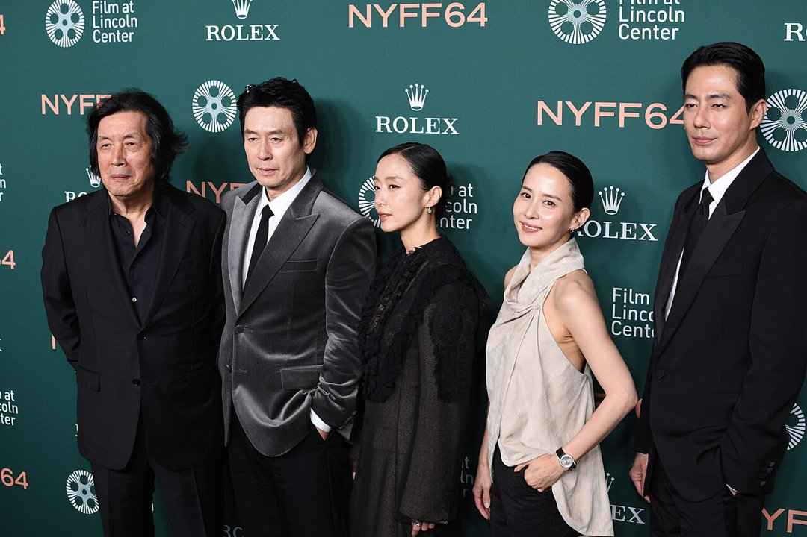
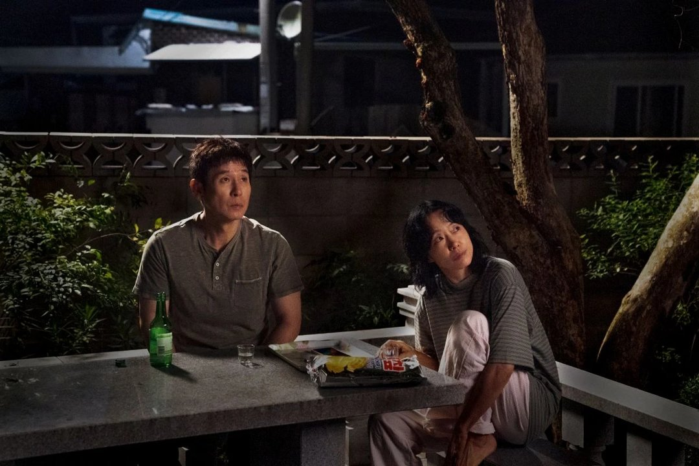
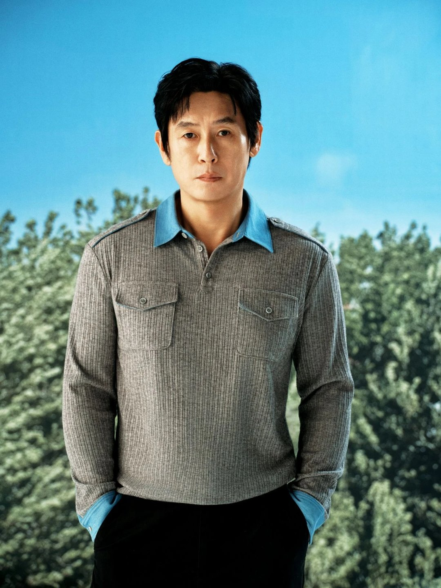
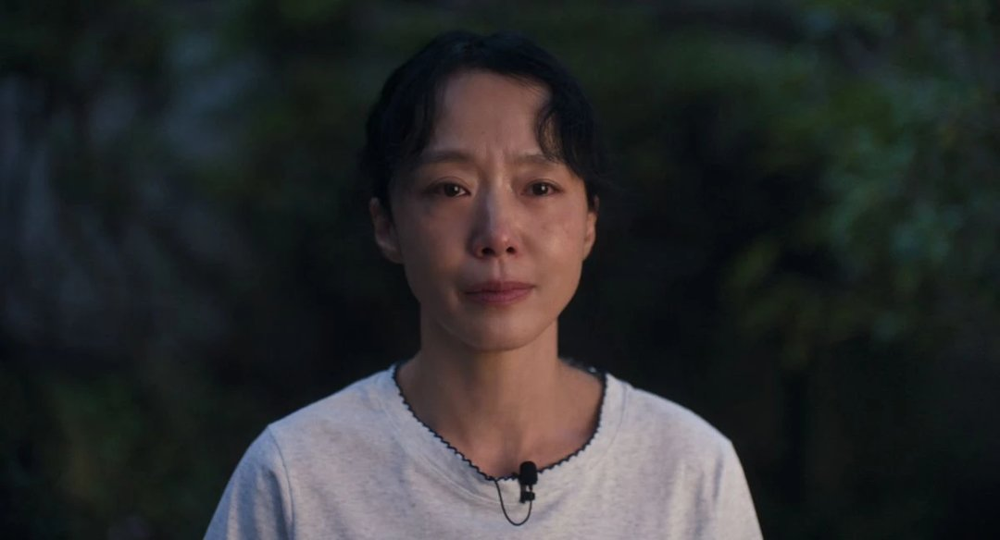
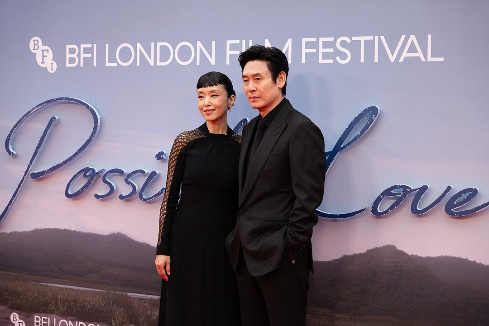

해고 노동자 부부와 다큐멘터리 감독 부부가 카메라 한 대를 사이에 두고 만나면 무슨 일이 생길까요. 지난 6일 넷플릭스에 올라온 이창동 감독의 '가능한 사랑'이 던지는 질문이에요. 극장에서 놓쳤다면 재생 버튼을 누르기 전에 인물 관계와, 배우들이 직접 꺼낸 장면 셋부터 알고 가면 좋아요.
📷 사진 1 자리
▲ 사진: LR.127 / CC BY 4.0 / 위키미디어 공용
두 부부, 그리고 카메라 한 대
대규모 정리해고로 일터를 잃은 호석은 설경구, 그 곁의 아내 미옥은 전도연이 맡았어요. 이 부부 앞에 다큐멘터리를 찍겠다는 감독 예지(조여정)와 남편 상우(조인성)가 나타나요. 다큐 촬영으로 엮인 두 부부가 서로의 삶을 들여다보게 되는 이야기예요.
📷 사진 2 자리
▲ '가능한 사랑' 속 호석(설경구)과 미옥(전도연) · 사진=넷플릭스 제공
영화는 베니스국제영화제 경쟁 부문에서 은사자상(심사위원대상)을 받았고, 극장 개봉을 거쳐 넷플릭스로 넘어왔어요. 아카데미 국제장편영화상 한국 출품작이기도 해요.
박하사탕, 오아시스, 밀양의 이름들
이 캐스팅이 반가운 이유는 지난 작품에 있어요. 설경구는 '박하사탕', '오아시스'에 이어 다시 이창동 감독과 만났고, 전도연은 '밀양' 이후 오랜만에 손을 잡았어요.
설경구는 출연 이유를 "그냥 이창동 감독이라서"라고 짧게 말했어요. 다른 작품 촬영 일정과 겹쳤는데도, 다른 배우가 캐스팅됐다는 기사를 보는 건 견딜 수 없을 것 같아 결국 합류했다고 해요.
📷 사진 3 자리
▲ '가능한 사랑'에서 호석을 연기한 설경구 · 사진=넷플릭스 제공
배우들이 꺼낸 장면 셋
첫째는 미옥의 인터뷰 장면이에요. 영화 속 다큐 카메라 앞에서 미옥이 가족에게 있었던 일을 털어놓는 대목인데, 전도연은 이 장면 대사만 따로 파일로 만들어 매일 들여다봤다고 했어요. 표현하려 하지 말고 그냥 느끼라는 게 감독의 주문이었고요.
📷 사진 4 자리
▲ '가능한 사랑' 속 미옥(전도연) · 사진=넷플릭스 제공
둘째는 달이 비치는 장면이에요. 설경구는 기술 시사 때는 다른 배우들과 달리 눈물이 나지 않았는데, 베니스 상영에서 달이 화면에 뜨자 마음이 이상해졌다고 털어놨어요. "다행히 조인성이 같이 울어줬다"는 말도 덧붙였죠.
셋째는 바닷가예요. 영화 후반은 바닷가 여행으로 이어지는데, 이 바다 장면은 촬영 초반에 가장 먼저 찍었어요. 전도연은 감정을 쌓기도 전에 클라이맥스부터 찍어야 해서 배우도 감독도 어떤 감정이 나올지 예측하기 어려웠다고 했어요.
📷 사진 5 자리
▲ 사진: Marlene Landu / CC BY-SA 4.0 / 위키미디어 공용
긴 호흡이 망설여진다면
해고 노동자 부부의 이야기에 '사랑'이라는 제목을 붙인 영화예요. 전도연은 이 제목을 가능하지 않은 것투성이인 세상에서 가능한 사랑을 찾아가는 이야기로 풀었어요.
볼거리는 사건보다 인물의 말과 얼굴이에요. 설경구는 이창동 영화가 자극적이기보다 느리게 스며든다고 했고, 감독도 느린 영화이니 인내심을 갖고 봐 달라고 당부했어요. 전도연이 카메라 앞에선 사람이 조금 달라진다고 말한 만큼, 같은 인물이 다큐 카메라 앞과 뒤에서 어떻게 다른지 견줘 보는 재미도 있어요.
'박하사탕'이나 '밀양'처럼 여운이 긴 영화를 좋아했다면 잘 맞을 작품이에요. 빠른 전개를 기대한다면 한 번에 다 보기보다 장면 셋을 기준으로 끊어 보는 것도 방법이에요.
정리하면서 눈에 띈 건 배우들이 꼽은 장면이 모두 '계산하지 못한 순간'이었다는 점이에요. 설경구는 달 장면에서, 전도연은 바다 장면에서 어떤 감정이 나올지 몰랐다고 했죠. 처음 볼 때는 줄거리를 따라가기보다 이 세 장면에서 인물의 얼굴이 어떻게 바뀌는지에 집중해 보길 권해요.
✍️ 직접 보거나 들은 경험이 있으면 위 문단에 한두 줄 덧붙이세요 (이 안내 줄은 지우기)
보기 전에 기억할 장면은 미옥의 인터뷰, 달, 바닷가 셋이에요. '가능한 사랑'은 지금 넷플릭스에서 볼 수 있어요.




